活動寫真
原創照片，歡迎轉載，註明出處，一同推廣。
2022台北燈節
2022-02-20 @ 台北士林⇧ 正面左起：林于馨、潘姿怡、陳詩雅
01(林于馨)、Mina(潘姿怡)、詩雅(陳詩雅)表演著「閃亮的幸運」。
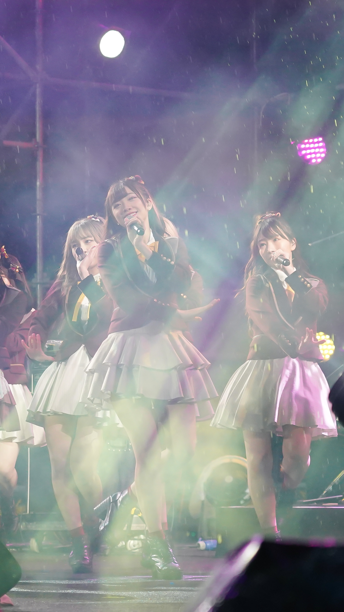
⇧ 左起：林易沄、冼迪琦、藤井麻由
顏值擔當小迪(冼迪琦)與舞蹈擔當Eki(林易沄)、Mayu(藤井麻由)，這個組合太厲害了吧！
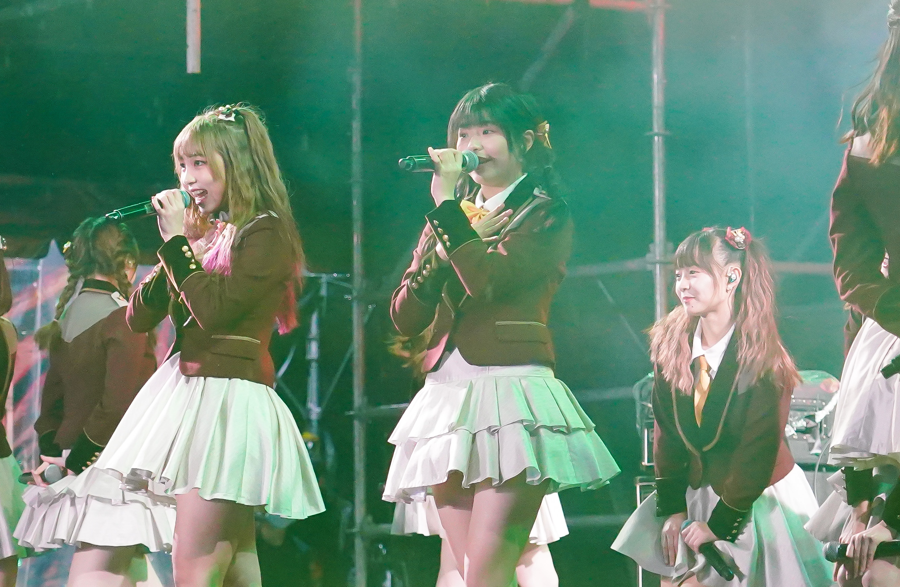
⇧ 左起：林易沄、王逸嘉、陳詩雅
台北燈節的照片就從新科正式生Eki(林易沄)、逸嘉(王逸嘉)與準畢業生詩雅(陳詩雅)揭開序幕吧！
桃園陽光劇場開幕演唱會
2021-12-25 @ 桃園陽光劇場⇧ 袁子筑
高挑模特筑筑(袁子筑)，當起偶像也是魅力十足的！
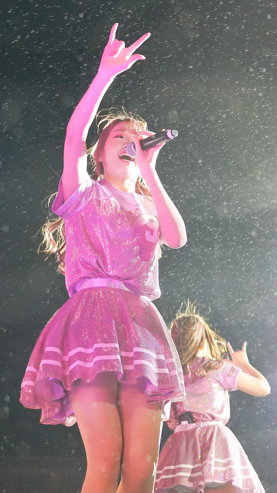
⇧ 李佳俐
雪中(?)熱唱的栗子(李佳俐)。
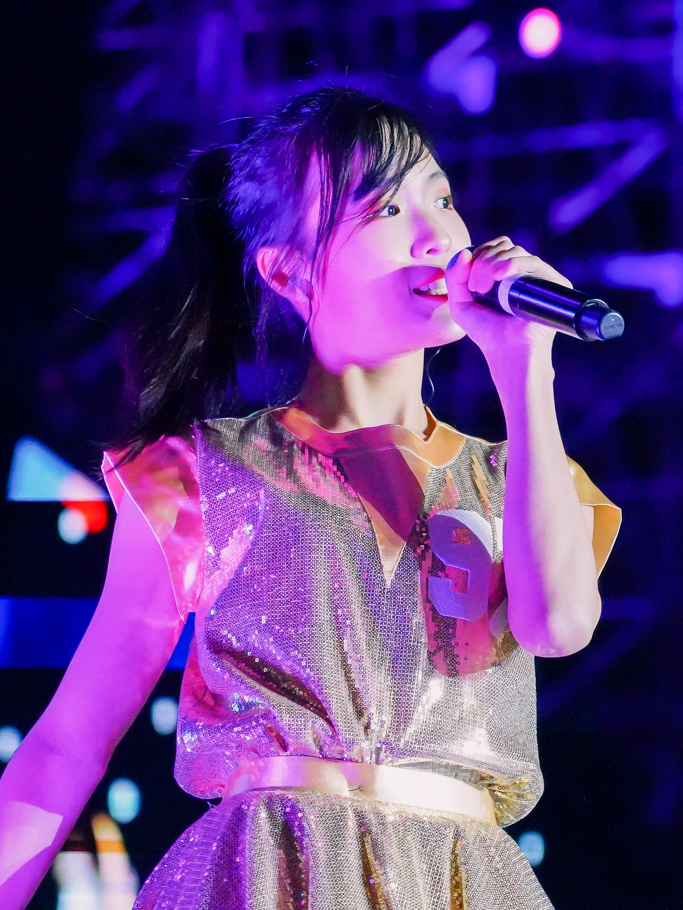
⇧ 翁彤薰
唱歌很好聽的嗡嗡(翁彤薰)。

⇧ 左起：高云珏、小山美玲
來自日本的性感女孩Mirei(小山美玲)與很多人搶著被她娶的珏哥(高云珏)。
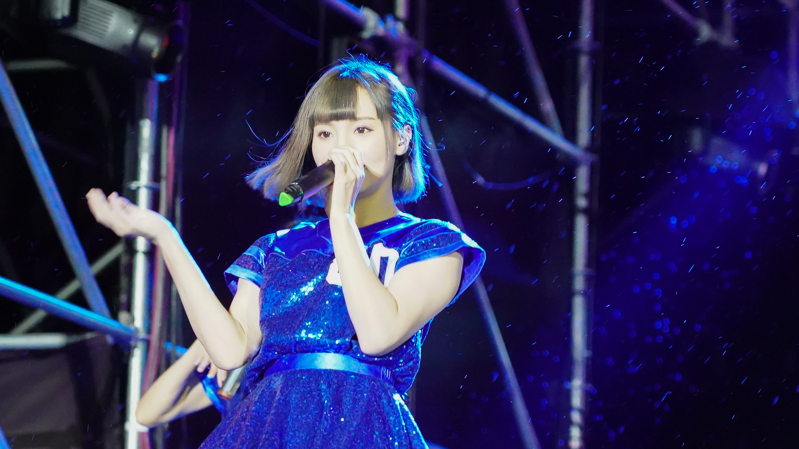
⇧ 柏靈
荷蘭混血兒ㄅㄌ(柏靈)不僅是 AKB48 Team TP 正式生，同時也是樂團 The Puzzle5 的團長呢！
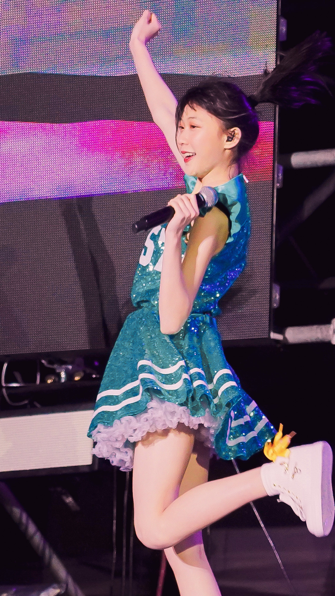
⇧ 吳婉淩
文藝少女淩淩(吳婉淩)舞動起來也是活力十足啊！

⇧ 左起：董子瑄、林易沄
AKB48 Team TP 的英文擔當安妮瑄(董子瑄)與舞蹈擔當 Eki(林易沄)。
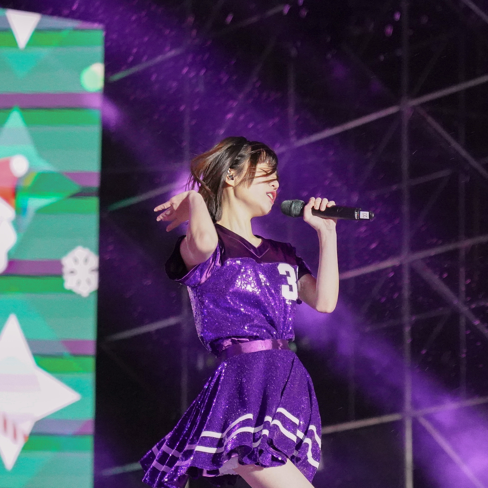
⇧ 邱品涵
完全沈浸在表演中的品涵(邱品涵)。
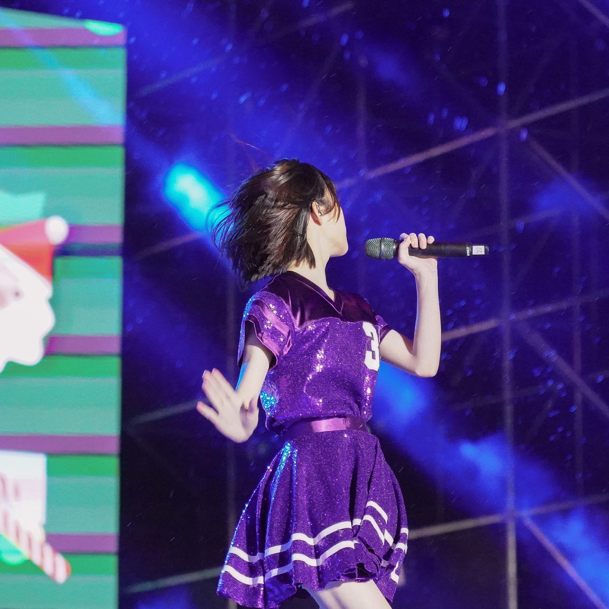
⇧ 邱品涵
品涵(邱品涵)就算是把頭撇過去，還是可以輕易抓住觀眾的目光。
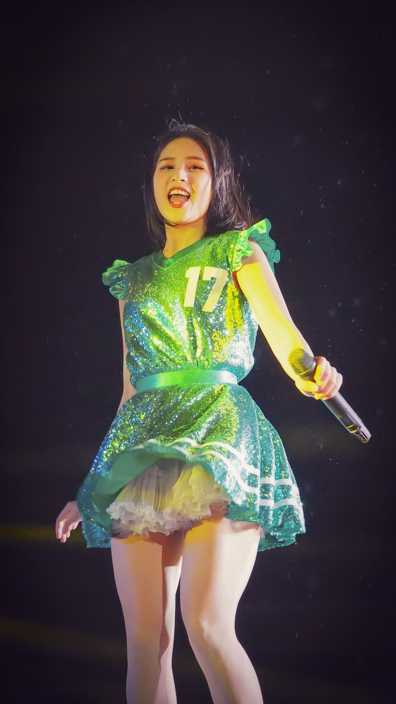
⇧ 林亭莉
阿莉(林亭莉)飯撒三部曲之一：咦？12點鐘方向發現小噗噗！
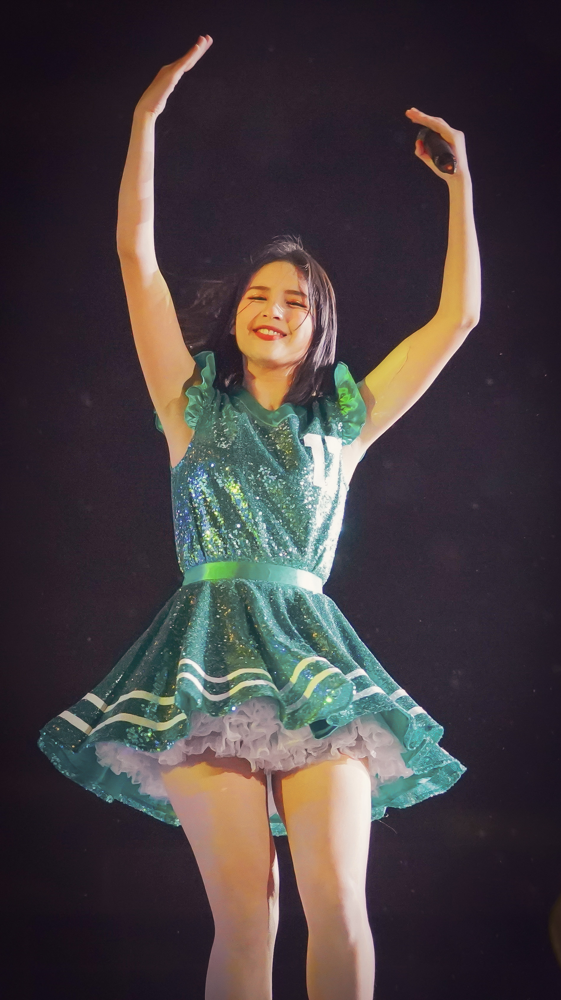
⇧ 林亭莉
阿莉(林亭莉)飯撒三部曲之二：看我高舉雙手，漾起笑容。
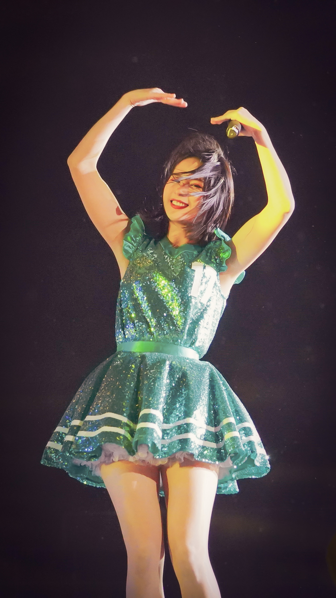
⇧ 林亭莉
阿莉(林亭莉)飯撒三部曲之三：愛心加上甜甜的wink，瞬間擄獲你們的心。
詩羽桃園演出
2021-12-25 @ 桃園⇧ 曾詩羽
詩羽的演唱真的是聽覺與視覺的雙重享受啊！
西門PLAY樂購町 Hangout音樂演唱會
2021-12-04 @ 台北西門町⇧ 左起：冼迪琦、林于馨
SSKR 成員之二，香港首席美少女小迪(冼迪琦)以及擁有無敵可愛笑顏的 01(林于馨)。
⇧ 左起：冼迪琦、林于馨、潘姿怡、李佳俐
娃娃音卻不失帥氣的搖滾倉鼠 Mina(潘姿怡)與浮誇愛哭哭的主唱栗子(李佳俐)。
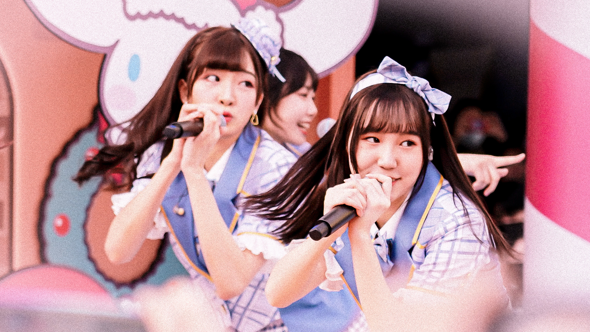
⇧ 左起：冼迪琦、劉曉晴
AKB48 Team TP 唯二香港成員，小迪(冼迪琦)和同為 SSKR 成員的閃亮閃亮搞怪小太陽小晴(劉曉晴)。
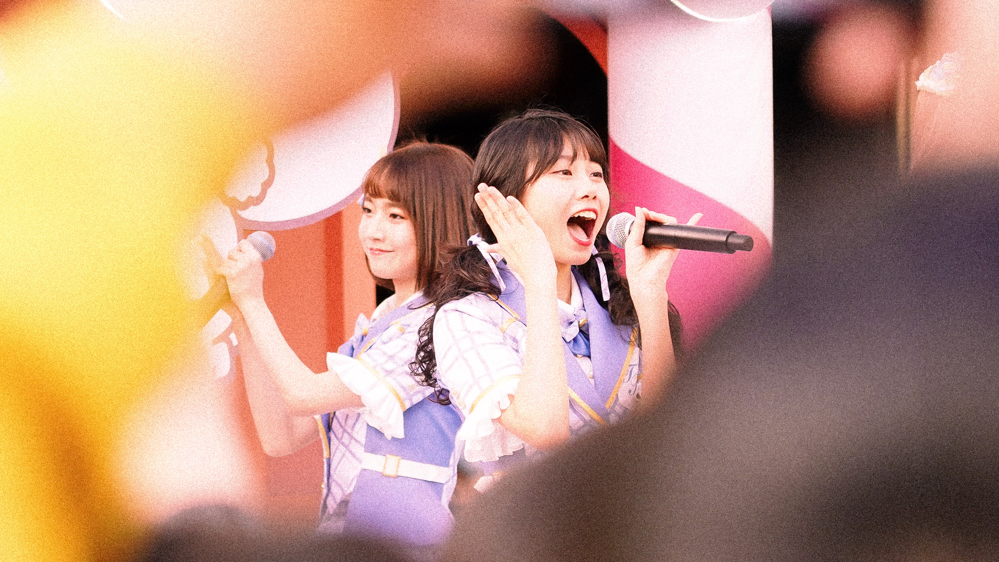
⇧ 左起：潘姿怡、蔡亞恩
AKB48 Team TP 的 TP花栗鼠，奇奇怪怪組合：Mina(潘姿怡)、表情聲音豐富的蕎麥麵老闆麵麵(蔡亞恩)。
詩羽復出首演
2021-11-25 @ 台北⇧ 曾詩羽
眾所期待的詩羽復出首演，在台上果然還是閃閃動人啊！
《看見夕陽了嗎？》板橋簽唱會
2020-01-04 @ 板橋車站環球購物中心
⇧ 潘姿怡
眼神無辜、單純、清澈，但也可能只是單純在發呆的 Mina(潘姿怡)。
⇧ 潘姿怡
這是「傘蜥蜴」版本的Mina(潘姿怡)？(被打)
⇧ 潘姿怡
這是「傘蜥蜴噴毒液」版本的Mina(潘姿怡)？(被打死)
⇧ 潘姿怡
Mina(潘姿怡)是位很有特色的小偶像，包括她的娃娃音、她的帥氣搖滾，以及一些奇奇怪怪的習慣癖好，非常立體。
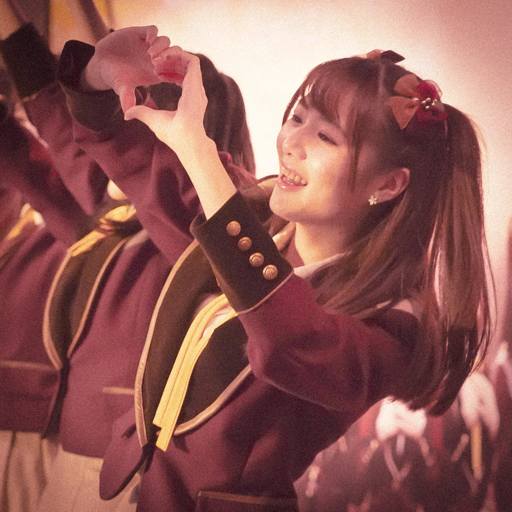
⇧ 曾詩羽
詩羽是三單的選拔成員，也是團體中的特色成員之一。目前雖已離團，單飛後仍在夢想的道路上努力著，表現依然十分優異，令人期待。
⇧ 劉語晴
溫暖貼心、擁有會笑的眼睛的77(劉語晴)，當天還自製小紙牌感謝七兒們的到來呢！